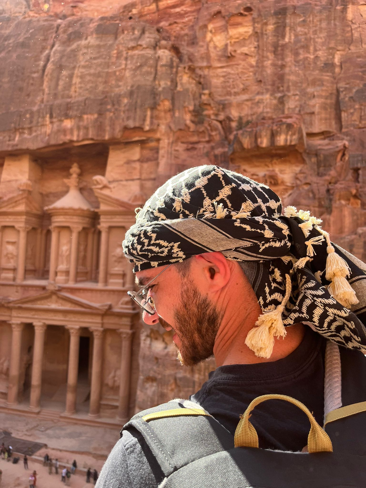

Simone Ubaldi
simoneubaldi91@hotmail.it
Scorri giù

Sono nato ad Avezzano (AQ) dove ho vissuto per i primi tre anni di vita, in seguito, con la famiglia ci siamo trasferiti in provincia di Rieti dove vivo ancora. Ho frequentato alle superiori l'Istituto Tecnico per Geometri. Ho frequentato l'università degli studi de L'Aquila per un anno e mezzo, che alla fine ho mollato per iniziare a lavorare come Geometra. Ho lavorato gli ultimi 8 anni in una Studio di Ingegneria strutturale e in concomitanza ho lavorato come cameriere in vari ristoranti quasi tutti i fine settimana, attualmente sono Maitre di sala.
I miei hobby attuali sono l'artigianato ed il restauro, quando posso mi svago con il calcio balilla, la lettura ed ascolto tanta musica di qualsiasi genere.
In passato ho praticato svariati sport, tra cui la pallavolo, Crossfit e Kickboxing.
Il mio Profilo GitHub
Mi ritengo una persona con molta determinazione , se voglio fare una cosa prima o poi la faccio e solitamente ci riesco. Ho sempre bisogno di nuovi stimoli, la staticità mi consuma. Mi piace avere una mentalità aperta e da sempre mi piace viaggiare, anche se con molti impegni lavorativi che hanno occupato molto del mio tempo non l'ho fatto abbastanza. Ma ora ho intenzione di rifarmi.
Sono molto responsabile, soprattutto nel lavoro, dove mi sono distinto in tutti gli ambiti che ho praticato. MI piace fare le cose in un certo modo.
Ho una certa versatilità ad imparare cose nuove influenzata sicuramente dalla curiosità che mi accompagna da sempre.
Le mie competenze (e skills)
- Progettazione e Calcolo strutturale in edilizia
- Progettazione in ambito urbanistico
- Cameriere e Maitre di sala
- Barman
- Corriere di farmaci (per breve tempo)
- Agricoltore (per breve tempo)
- Varsatilità e velocità di apprendimento
- Problem solving
- Lavoro di squadra
Competenze da acquisire
- Capacità e conoscenze nel Front-End
- Capacità e conoscenze nel Back-end
- Rafforzare il mio Inglese
| Competenze lavorative | Competenze accademiche |
| Geometra | Diploma di scuola superiore |
| Progettazione e calcolo strutturale | Abilitazione alla professione di Geometra |
| Progettazione urbanistica | .... |
| Maitre di sala | .... |